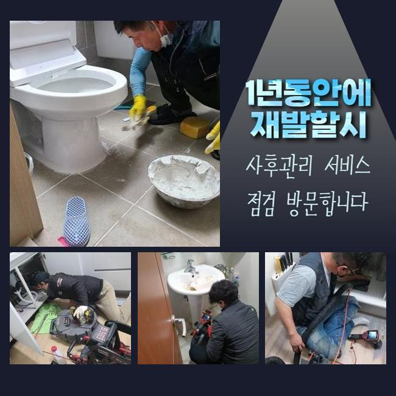
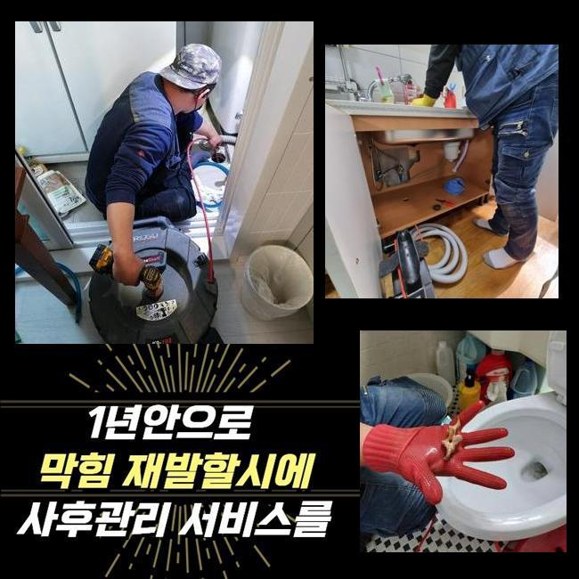
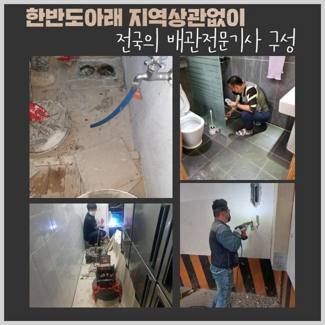
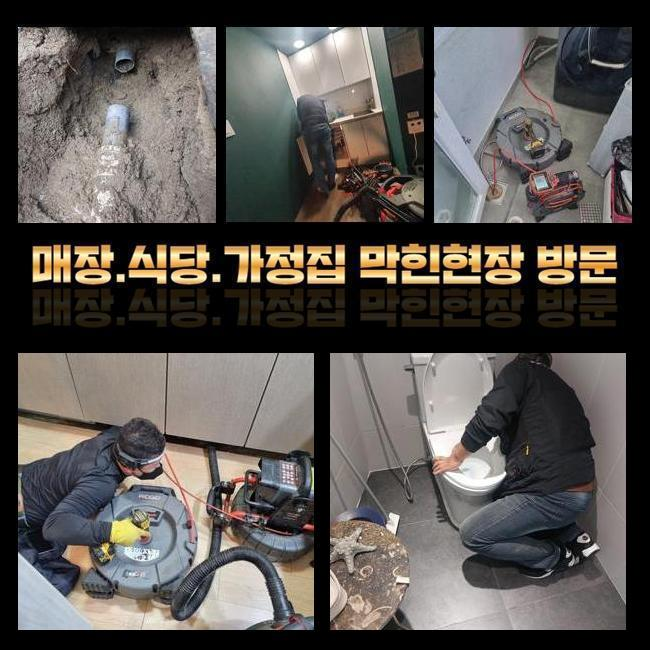
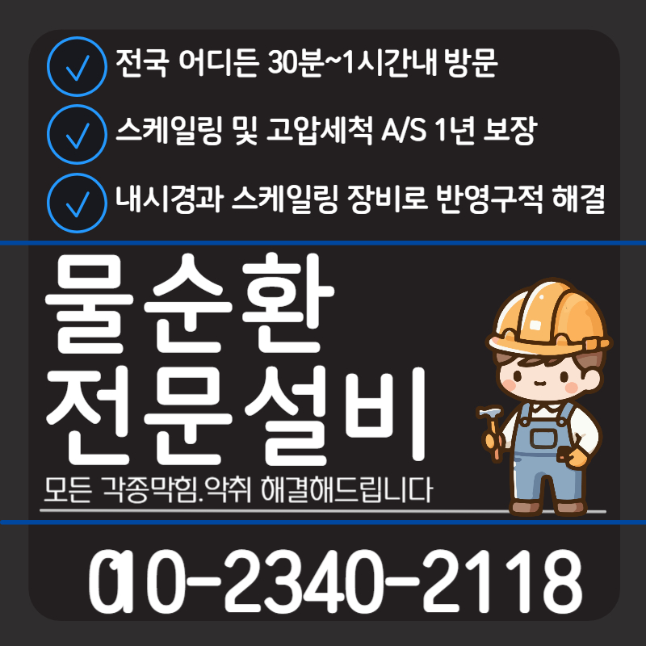

🏠 남촌동세탁실막힘 궐동 오수맨홀청소 설비출장
용인 하수구막힘 전문 시공 후기

📋 작업 개요
- 위치: 용인
- 서비스 유형: 하수구막힘, 배관막힘, 맨홀막힘, 역류해결, 뚫는업체, 배관청소, 고압세척
- 작업 일시: 2024. 10. 8. 20:44
- 업체명: 하수구수사대 (010-5615-2118)
🔍 문제 상황
남촌동세탁실막힘 궐동 오수맨홀청소 설비출장
배관에서 올라오는 냄새들은 생활적인 측면에서 겪게되는 고민인데요
냄새들의 기조로는 관로들의 막힘이라고 볼 수 있겠습니다 하수관로에 이물들이 모여 흐름들을 방해하며 마침내 고착물이 굳으며 생겨난 것입니다
악취문제를 제거하면 축적되어 오염된 잔해물을 완전하게 없애주어야 하겠습니다
하지만 생활 속에서 이런 흐름으로 흘러가는 과정을 모르셔서 다양한 방책을 실시해보지만 냄새들을 완화시키는데 역부족인 사례가 더 많아요
장비의 보유량과 노하우가 부족할 시 증상들이 생겨났을 때 무리한 조치를 실시하면 각 라인들이 망가질 확률이 있는 까닭에 되레 불상사를 일으킬 수 있어요
때문에 오류들이 발생되었다면 전문적인 도움들을 꾀하시는것이 좋겠습니다
달려간 장소에선 세탁실에 자리한 배관의 오류로 인하여 난감함을 겪고 계셨었는데요

🔎 원인 분석
💡 전문가 진단: 정밀 진단 장비를 사용하여 슬러지의 고착 여부를 판명하고 타격/세척 작업을 실시했습니다.
해당부분의 관로는 메인관로들과 여타 배관들과 함께 이어져있는 형태였는데 고객분이 안내해주신 건 예상치 못한 장소의 하수도에서 역류하여 전문가를 불러야겠다 하셨대요
고객께서 설명을 들은 뒤 호스들과 바닥 하수관에서 이어져있는 스팟에서 증상이 발발한 걸로 판단되었죠
공공배수로의 구간마다 증상이 발생하면서 다양한 피해들이 발생한걸로 생가고디었는데요
물사용을 하면 건너편 바닥 배관시설에서 역류하게되는 상황들로서 고객님 댁에 내방하여 서둘러 세척을 해봐야 했어요
허나 배수구엔 이물들이 넘처흘려 세척이 힘든 상태였어요
1차적으로 석션장치를 사용하여 넘친 하수들을 제거시키고 천천히 조심스럽게 점검하는 것이 좋아요
석션기를 사용한다면 고인 물과 잔재도 없어지게되어 이물제거가 문제없이 이뤄지죠
내시경장치로 들여다보니 개별 라인엔 슬러지나 이상징후는 딱히 없었고 공용관로로 흘러가는 부위에 기름성분이 자리잡은걸 목격했어요
슬러지는 통수를 가로막는데 충분하게 딱딱했고 냄새들을 풍기는 주요 기조로 판단되었어요

🔧 작업 과정
증상을 잠재울 목적으로 관로들의 슬러지들을 타격하는 샤프트도구를 써서야 되며, 그리고 메인관로의 길목쪽까지 세척들을 실시해서 유수를 방해하는 요소를 완화시키고 냄새들도 사그라들게 했죠
다양한 공간에서 흔히 볼 수 있는 가지배관들은 공용관로로 오물들이 한데 모여 배출되죠
기울어진 구배 탓에 잔여물질은 꺾인 부분에서 쌓이게되는 구조들로 이루어져있죠
그래서 공동배수관은 시기적절하게 점검을 실시하는게 좋겠습니다
개별 세대들로 퍼지는 사태를 막으려면 필요하다면 출수구에도 배관세척이 요구되겠습니다
청소하는 와중에도 탈락된 이물들을 석션장비를 써서 적당히 흡입시켜야 작업이 수월해지고 내시경을 통해 검수하고자 하는 시점에도 잔해의 파악들이 제대로 이뤄지므로 적당한 때에 이러한 과정은 필수적입니다
잔해물이 단단해짐과 동시에 관로들에 자리했을 땐 굳은 이물들을 흡입하기 좋게 만들어놓는게 중요하겠습니다
스케일링을 통해 정체된 지점을 뚫은 직후엔 작업들이 완벽히 행해졌는지 체크해보기 위하여 하수구 내시경장비로 진단을 실시하는데요
검수할 때 의뢰자께서도 살펴볼 수 있고 컨디션이 회복된 하수관을 확실히 확인가능해요
작업 내용을 고객에게 말씀드리고 청소를 진행하니 의뢰인분들도 안심하실 수 있습니다
우리집 하수관이 어떤 기조로 문제된건지 어떤 방식으로 조치하면 안전한건지 의뢰인분이 선명하게 알고 계시면 자가적인 관리측면에서도 도움되실거라 믿습니다
끝으로 상당량의 수돗물등을 부어주어 배수구로 흘러가는지 검사를 이행해요
처음처럼 솟구치거나 정체없이 각 라인으로 흘러가는걸 보았습니다
고객님으로 하여금 청소된 배수시설을 유지함과 더불어 관리측면에 도움되는 내용들을 설명드린 후 마무리에 들어갔습니다


✅ 작업 완료
어떻게 해결해야 하는지 고민이 될 때 저희전문가들에게 의뢰하시면 신속히 방문드려 점검할게요
현장의 상태들에 적합하도록 솔루션을 지원해 애로 사항 없게 유지시킬 수 있게 해드리고 있습니다
통수 불능으로 난처함을 마주했다면 언제든지 저희전문가들에게 연락 주세요
해당 장소의 가정이 쾌적함과 동시에 문제없게끔 도와드릴게요



⚠️ 하수구 배관 막힘 예방 및 관리 가이드
- ✅ 머리카락, 비닐, 물티슈 등 물에 분해되지 않는 이물질은 하수구 유입을 절대 금지해 주세요.
- ✅ 하수구 거름망을 씌우고 모여진 이물질은 주기적으로 쓰레기통에 바로 비워주셔야 합니다.
- ✅ 배관 노후가 심할 경우 이물질이 더 쉽게 걸리므로 주기적인 배관 세척(고압세척 등)을 권장합니다.
- ✅ 작업 후 1년 이내 재발 시 하수구수사대에서 무상 A/S 보증 서비스를 제공합니다.
💡 핵심 정리
- 확실한 장비 작업(내시경 점검 및 샤프트 스케일링)으로 원인을 뿌리 뽑습니다.
- 작업 후 1년 이내에 동일한 부위 재발 시 100% 무상 A/S 서비스를 보장합니다.
- 서울 · 경기 · 인천 전 지역에 24시간 언제든 긴급 출동할 수 있도록 항시 대기 중입니다.
❓ 자주 묻는 질문 (FAQ)
🚨 용인 하수구막힘 문제로 고민이신가요?
정확한 원인 진단과 확실한 시공으로 재발 없는 해결을 약속드립니다.
24시간 긴급 출동 | 서울 · 경기 · 인천 전지역 | 1년 내 재발 시 무상 A/S